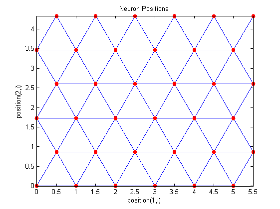
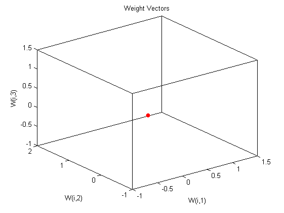

SOM神经网络的数据分类--柴油机故障诊断
| 该案例作者申明： |
| 1：本人长期驻扎在此板块里，对该案例提问，做到有问必答。本套书籍官方网站为：video.ourmatlab.com |
| 2：点此从当当预定本书：《Matlab神经网络30个案例分析》。 |
3：此案例有配套的教学视频，视频下载方式video.ourmatlab.com/vbuy.html。 |
| 4：此案例为原创案例，转载请注明出处（《Matlab神经网络30个案例分析》）。 |
| 5：若此案例碰巧与您的研究有关联，我们欢迎您提意见，要求等，我们考虑后可以加在案例里。 |
Contents
清空环境变量
clc clear
录入输入数据
载入数据
load p; %转置后符合神经网络的输入格式 P=P';
网络建立和训练
newsom建立SOM网络。minmax（P）取输入的最大最小值。竞争层为6*6=36个神经元
net=newsom(minmax(P),[6 6]);
plotsom(net.layers{1}.positions)
% 5次训练的步数
a=[10 30 50 100 200 500 1000];
% 随机初始化一个1*10向量。
yc=rands(7,8);
 进行训练
训练次数为10次
net.trainparam.epochs=a(1); % 训练网络和查看分类 net=train(net,P); y=sim(net,P); yc(1,:)=vec2ind(y); plotsom(net.IW{1,1},net.layers{1}.distances) % 训练次数为30次 net.trainparam.epochs=a(2); % 训练网络和查看分类 net=train(net,P); y=sim(net,P); yc(2,:)=vec2ind(y); plotsom(net.IW{1,1},net.layers{1}.distances) % 训练次数为50次 net.trainparam.epochs=a(3); % 训练网络和查看分类 net=train(net,P); y=sim(net,P); yc(3,:)=vec2ind(y); plotsom(net.IW{1,1},net.layers{1}.distances) % 训练次数为100次 net.trainparam.epochs=a(4); % 训练网络和查看分类 net=train(net,P); y=sim(net,P); yc(4,:)=vec2ind(y); plotsom(net.IW{1,1},net.layers{1}.distances) % 训练次数为200次 net.trainparam.epochs=a(5); % 训练网络和查看分类 net=train(net,P); y=sim(net,P); yc(5,:)=vec2ind(y); plotsom(net.IW{1,1},net.layers{1}.distances) % 训练次数为500次 net.trainparam.epochs=a(6); % 训练网络和查看分类 net=train(net,P); y=sim(net,P); yc(6,:)=vec2ind(y); plotsom(net.IW{1,1},net.layers{1}.distances) % 训练次数为1000次 net.trainparam.epochs=a(7); % 训练网络和查看分类 net=train(net,P); y=sim(net,P); yc(7,:)=vec2ind(y); plotsom(net.IW{1,1},net.layers{1}.distances) yc
Warning - PLOTSOM only shows first three dimensions.
Warning - PLOTSOM only shows first three dimensions.
Warning - PLOTSOM only shows first three dimensions.
Warning - PLOTSOM only shows first three dimensions.
Warning - PLOTSOM only shows first three dimensions.
Warning - PLOTSOM only shows first three dimensions.
Warning - PLOTSOM only shows first three dimensions.
yc =
Columns 1 through 6
1 1 1 1 1 1
1 1 1 1 1 1
1 1 1 1 1 1
1 1 1 1 1 1
1 1 1 1 1 1
1 1 1 1 1 1
1 1 1 1 1 1
Columns 7 through 8
1 1
1 1
1 1
1 1
1 1
1 1
1 1
 网络作分类的预测
测试样本输入
t=[0.9512 1.0000 0.9458 -0.4215 0.4218 0.9511 0.9645 0.8941]'; % sim( )来做网络仿真 r=sim(net,t); % 变换函数 将单值向量转变成下标向量。 rr=vec2ind(r)
rr =
1
网络神经元分布情况
查看网络拓扑学结构
plotsomtop(net) % 查看临近神经元直接的距离情况 plotsomnd(net) % 查看每个神经元的分类情况 plotsomhits(net,P) web browser http://www.matlabsky.com/thread-11162-1-1.html

相关论坛： 《Matlab神经网络30个案例分析》官方网站：video.ourmatlab.com Matlab技术论坛：www.matlabsky.com Matlab函数百科：www.mfun.la Matlab中文论坛：www.ilovematlab.com |